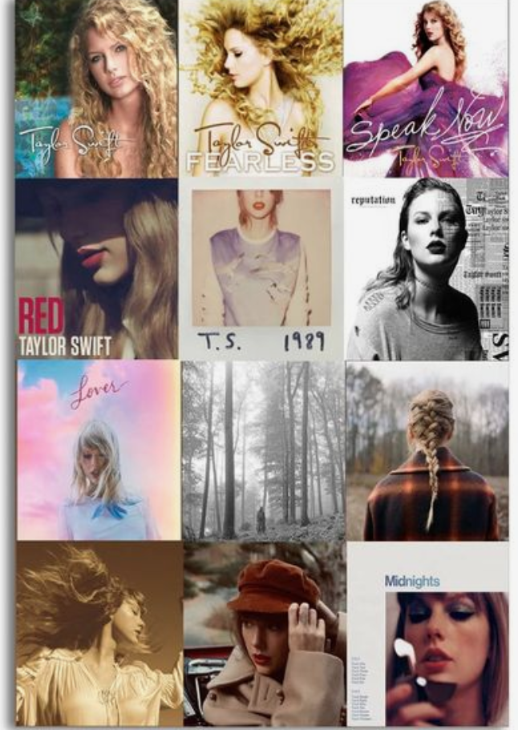
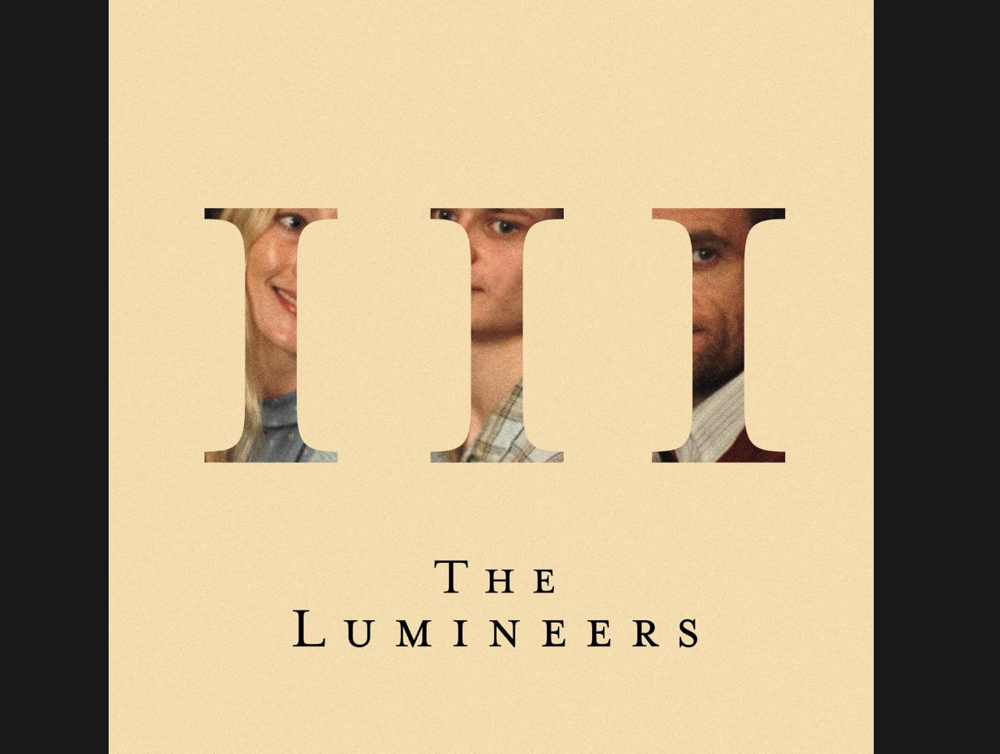

Favoriate Band/Singer

Taylor Swift is an 34 year old American singer-songwriter. She has widely influced the musice industry, and pop culture. She has a new album coming out on April 19th called The Tortured Poets Department. Overall she has released 10 orginal studio albums, 4 live albums, 4 re-recordered studio albums, and 5 extended plays in total she has 14 albums. She also has 14 grammys.

The Lumineers are an American alternative folk band based in Denver, Colorado. Wesley Schultz, is the lead guitar and vocals. He is also one of the founding members. Jeremiah Fraits, is the drummer, plays the piano, and percussion. He is also a founding member. They started playing and writing together in New Jersey, 2005. They have 4 studio albums, 19 singles, and 5 promotional singles.